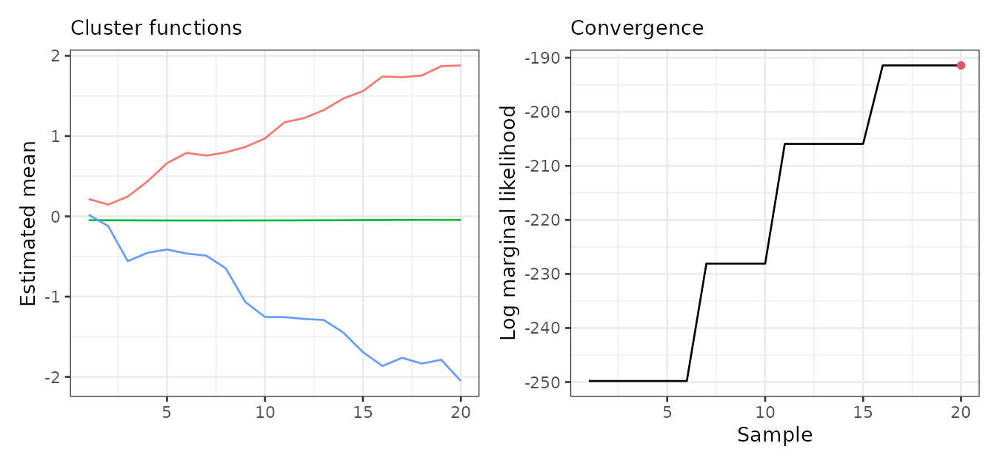
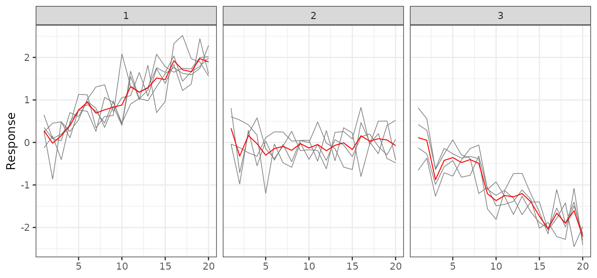

The sfclust() generic also accepts a long-format
data frame together with an explicit adjacency
matrix. This interface is useful when your data is not a
stars object — for example when you already have a
processed table, or spatial units that cannot be represented as a
regular stars grid. It’s also useful when you need a custom
adjacency structure derived from a GIS tool or domain knowledge, rather
than the automatically-detected one.
Data structure
Two identifier columns are always required:
-
id: unique row index (1 to ). -
ids: spatial unit index (integer, 1 to ).
A functional dimension column is also needed whenever your
formula references it:
-
<dimname>: functional dimension index; any column name chosen by the user, provided it matches thefnamesargument.
We construct a synthetic dataset with 13 regions observed over 20 time steps. The regions are grouped into three latent clusters, each following a distinct linear trend: increasing, flat, and decreasing.
set.seed(42)
ns <- 13L; nt <- 20L
# identifiers
df <- data.frame(
id = seq_len(ns * nt),
ids = rep(seq_len(ns), nt),
time = rep(seq_len(nt), each = ns)
)
# membership and cluster slopes
membership <- c(1, 1, 1, 1, 1, 2, 2, 2, 2, 3, 3, 3, 3)
slopes <- c(0.10, 0.00, -0.10)
# response
df <- transform(df, y = rnorm(ns * nt, mean = slopes[membership[ids]] * time, sd = 0.4))
head(df)#> id ids time y
#> 1 1 1 1 0.64838338
#> 2 2 2 1 -0.12587927
#> 3 3 3 1 0.24525136
#> 4 4 4 1 0.35314504
#> 5 5 5 1 0.26170733
#> 6 6 6 1 -0.04244981Adjacency matrix
The adjacency matrix encodes which regions are considered neighbours.
It must be a symmetric matrix of size
.
In practice this matrix typically comes from a GIS tool (e.g. via
sf::st_touches()), a domain-specific connectivity table, or
any other external source. Here we define an arbitrary irregular
neighbourhood structure for the 13 regions:
# Arbitrary adjacency (upper triangle only; symmetric = TRUE mirrors it)
# Within-cluster links: {1-5}, {6-9}, {10-13}; cross-cluster links: 5-6, 9-10
i_idx <- c(1, 2, 3, 4, 1, 3, 6, 7, 8, 6, 10, 11, 12, 10, 5, 9)
j_idx <- c(2, 3, 4, 5, 5, 5, 7, 8, 9, 9, 11, 12, 13, 13, 6, 10)
adj <- sparseMatrix(i = i_idx, j = j_idx, x = 1L,
dims = c(ns, ns), symmetric = TRUE)Clustering
Pass the adjacency matrix via adjacency, the starting
number of clusters via nclust, and the name of the
functional dimension via fnames. All other arguments are
forwarded to INLA::inla. For finer control over the initial
partition (e.g. fixing specific cluster assignments), you can
pre-compute it with genclust() and pass the result via
graphdata instead.
set.seed(42)
result <- sfclust(
df, adjacency = adj, nclust = 5, fnames = "time",
formula = y ~ f(time, model = "rw1"),
family = "gaussian",
niter = 20, burnin = 0, thin = 1, nmessage = 5
)#> Iteration 5: clusters = 6, births = 1, deaths = 0, changes = 0, hypers = 1, log_mlike = -249.806945442281#> Iteration 10: clusters = 5, births = 1, deaths = 1, changes = 0, hypers = 1, log_mlike = -228.08270191021#>
#> *** inla.core.safe: rerun to try to solve negative eigenvalue(s) in the Hessian
#>
#> *** inla.core.safe: rerun to try to solve negative eigenvalue(s) in the Hessian#> Iteration 15: clusters = 4, births = 1, deaths = 2, changes = 0, hypers = 1, log_mlike = -205.932598641884#> Iteration 20: clusters = 3, births = 1, deaths = 3, changes = 0, hypers = 1, log_mlike = -191.412243242203
result#> Within-cluster formula:
#> y ~ f(time, model = "rw1")
#>
#> Clustering hyperparameters:
#> log(1-q) birth death change hyper
#> -0.6931472 0.4250000 0.4250000 0.1000000 0.0500000
#>
#> Clustering movement counts:
#> births deaths changes hypers
#> 1 3 0 1
#>
#> Log marginal likelihood (sample 20 out of 20): -191.4122The returned object has class sfclust (without the
sfclust_stars subclass). The print output is identical to
the stars interface: formula, clustering hyperparameters, movement
counts, and log marginal likelihood.
Results
The summary shows the number of regions per cluster at the final iteration.
summary(result, sort = TRUE)#> Summary for clustering sample 20 out of 20
#>
#> Within-cluster formula:
#> y ~ f(time, model = "rw1")
#>
#> Counts per cluster:
#> 1 2 3
#> 5 4 4
#>
#> Log marginal likelihood: -191.4122fitted() returns a data frame instead
of a stars object, with one row per observation and columns
for the cluster assignment, the linear predictor (mean,
sd, quantiles), and the cluster-level mean
(mean_cluster):
df_fit <- fitted(result, sort = TRUE)
head(df_fit[c("id", "ids", "time", "cluster", "mean", "mean_cluster")])#> id ids time cluster mean mean_cluster
#> 1 1 1 1 1 0.21601251 0.21601251
#> 2 2 2 1 1 0.21601251 0.21601251
#> 3 3 3 1 1 0.21601251 0.21601251
#> 4 4 4 1 1 0.21601251 0.21601251
#> 5 5 5 1 1 0.21601251 0.21601251
#> 6 6 6 1 2 -0.04776628 -0.04776628The usual plot helpers are available. Since there is no spatial
geometry, plot() has no map panel —
which = 1:2 refers to the cluster functions and the log
marginal likelihood:
plot(result, sort = TRUE)
plot_clusters_series(result, y, sort = TRUE) +
facet_wrap(~ cluster, ncol = 3) +
labs(y = "Response")